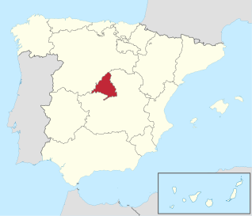

Madrid (deutsch [maˈdʁɪt], spanisch [maˈðɾið]) ist die Hauptstadt Spaniens und der Autonomen Gemeinschaft Madrid. Die Metropolregion Madrid zählt mit etwa sieben Millionen Einwohnern zu den größten Metropolen Europas. Madrid ist (ohne Vororte) mit über 3,2 Millionen Einwohnern nach Berlin die zweitgrößte Stadt der Europäischen Union und die größte Stadt Südeuropas. Madrid ist seit Jahrhunderten der geographische, politische und kulturelle Mittelpunkt Spaniens (siehe Kastilien) und der Sitz der spanischen Regierung. Hier residieren auch der König, ein katholischer Erzbischof sowie wichtige Verwaltungs- und Militärbehörden. Als Handels- und Finanzzentrum hat die Stadt nationale und internationale Bedeutung. In Madrid befinden sich sechs öffentliche Universitäten sowie verschiedene andere Hochschulen, Theater, Museen und Kultureinrichtungen.
| Land | Spanien |
| Autonome Gemeinschaft | Madrid |
| Provinz | Madrid |
| Comarca | Metropolitana de Madrid |
| Einwohner | 3.266.126 (1. Jan. 2019) |
| Bevölkerungsdichte | 5.392 Einw./km² |
| Postleitzahl | 28001–28080 |
| Amtsprache | Kastilisch |
| Bürgermeister | José Luis Martínez-Almeida (PP) |
| Website | www.madrid.es |
Madrid befindet sich im Zentrum Spaniens auf 667 msnm und ist damit die höchstgelegene Hauptstadt der Europäischen Union und die zweithöchstgelegene Hauptstadt Europas (nach Andorra la Vella). Die vom kleinen Fluss Manzanares durchflossene Stadt gehört zur historischen Landschaft Kastilien und liegt inmitten der Meseta, der Hochebene von Kastilien. Nordwestlich der Stadt erheben sich die Berge der Sierra de Guadarrama, die im Peñalara bis 2429 m hoch aufragen. Nach Osten öffnet sich das Tal des Henares, in dem Eisen- und Autobahnen nach Saragossa und Barcelona verlaufen. Etwa 70 km südlich, am Tajo, liegt die alte kastilische Hauptstadt Toledo, die heute Hauptstadt der autonomen Region Castilla-La Mancha ist.
Die Bevölkerung wuchs seit der Erhebung Madrids zur Hauptstadt Spaniens im 16. Jahrhundert kontinuierlich an und erreichte in den 1970er-Jahren mit über 3,1 Millionen Einwohnern ihr heutiges Niveau. Die Bevölkerung von Madrid ist mehrheitlich römisch-katholisch. Das Territorium des Erzbistums Madrid entspricht im Wesentlichen dem Gebiet der Hauptstadt. Laut einer aktuellen Umfrage aus dem Jahr 2019 bekennen sich 67 Prozent der Stadtbevölkerung zum römisch-katholischen Glauben, wobei die Mehrheit der Katholiken ihren Glauben nicht aktiv praktiziert. Weitere 4 Prozent geben an, Gläubige einer anderen Religion zu sein. 15 Prozent der Madrilener sind Agnostiker oder nicht-gläubig, während sich 13 Prozent als Atheisten bezeichnen.[6]